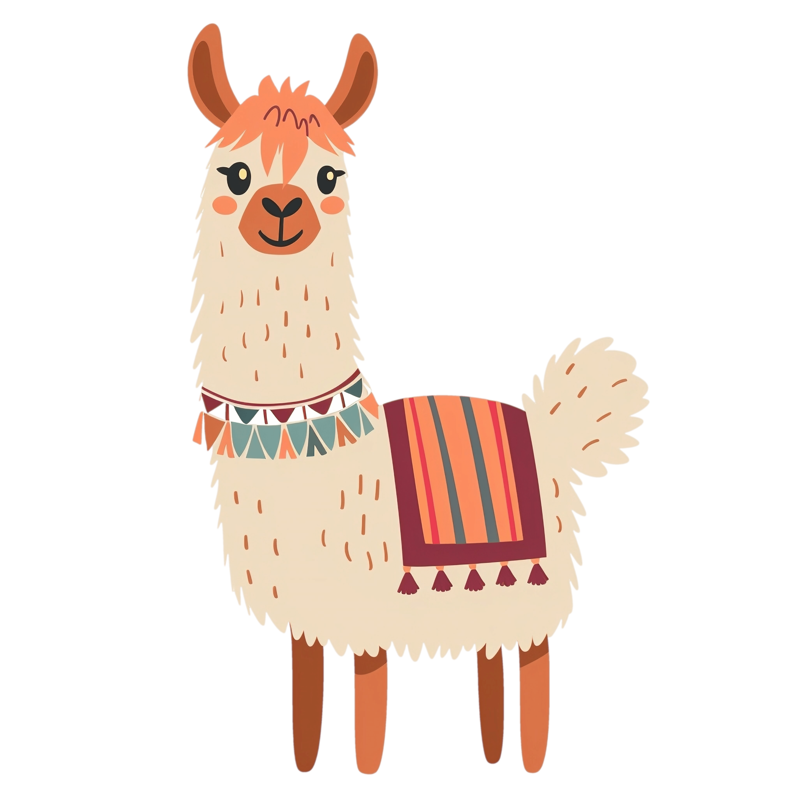

01 WEB DIZAJN
Ranná pekáreň
Pokojný web pre lokálnu pekáreň, kde hrá hlavnú úlohu poctivé pečivo a vôňa čerstvého rána.
PORTFÓLIO · 2026
Tvorím webové stránky, ktoré spájajú premyslený dizajn s príjemným používaním. Tu je výber projektov, ktoré vznikli z nápadov a chuti tvoriť.
VÝBER Z TVORBY
Každý projekt je malý svet s vlastným nápadom, náladou a detailmi.
01 WEB DIZAJN
Pokojný web pre lokálnu pekáreň, kde hrá hlavnú úlohu poctivé pečivo a vôňa čerstvého rána.
02 VIZUÁLNA IDENTITA
Priateľská online predajňa izbových rastlín s jednoduchým sprievodcom pre pestovateľov.
03 EVENT WEB
Farebná pozvánka na susedský festival plný hudby, dobrého jedla a letnej atmosféry.
NIEČO O MNE

Som tvorivý človek, ktorého baví meniť nápady na stránky s charakterom.
Pri tvorbe ma zaujíma nielen to, ako web vyzerá, ale aj ako sa v ňom človek cíti. Rád skúšam nové veci, všímam si detaily a učím sa pri každom ďalšom projekte.